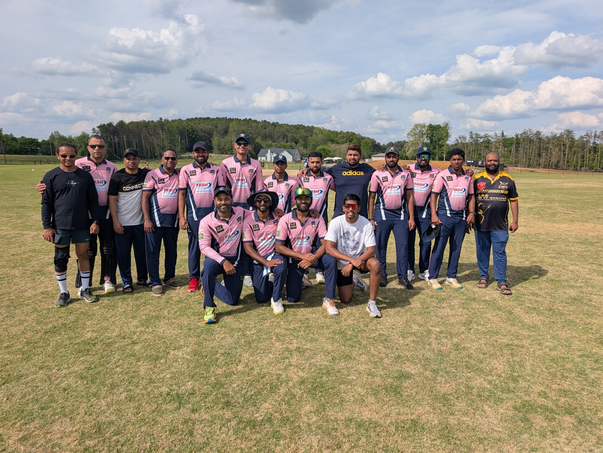

Match Report: ACZ Gladiators – Undefeated First Leg!
PVCL Spring T-20 2025 – April 27, 2025
1..2..3.. Go Glads..!!!
- Match report:
- Before getting into the match report, I would like to cheer for the entire team to be focused on being undefeated in the first leg of the season 1..2.. 3.. Go Glads..!!! Couple of call outs..
Aryan is giving his final exams this week and last week, but made the effort to fly from Raleigh and play. Big thanks – it's not easy what he did in the past couple of weeks.
- Rushi has been consistently flying from NJ to make sure we do well here. Just having him on the side gives the entire team a sense of relief, but again, what he does is not easy – managing family, NJ cricket commitments, and his job. It's a lot. We as a team need to figure out how we can contribute to the efforts and commitment from both Aryan and Rushi. Big cheers to both of them.. 1..2..3.. Go Glads..!!
- There are multiple other players who are local here and are giving their 110% this year. Thanks to all, and big cheers for all of you.
1..2..3.. Go Glads..!!
- Toss: It was crucial. The pitch was wet, so it was obvious to win and bowl first. The ball was gripping, it bounced, but it was a very slow track and difficult to bat on early in the morning. We won the toss and put the opposition in to bat first – honestly, a good toss to win.
- Bowling: As a new team, we are doing a lot of things right, one of them being knowing our roles and delivering on expectations so far. Let's keep building on this.
- Govind and Krishna provided a great start and our fielders did a great job of supporting them and all other bowlers. Akhil and Ansh made sure we kept their batsmen under pressure and kept on getting wickets at regular intervals – we never let the opposition off the hook.
- Rushi bowled his 4 overs and dismantled the opposition by grabbing 3 wickets from the other end. Then our fast bowlers Krishna, Govind, and Akhil just finished up the tail. Akshay also bowled one over and grabbed a wicket to his name. The variety of our bowling unit is immense.
- We had a leg spinner in Aniket who was waiting on the sidelines if needed – thanks for everything you did Aniket, and I'm sure your time will come soon.
- Our field placement is improving as we bowled our 20 overs in the given time, even earlier, so we are starting to do a few things right, while still having room for improvement.
- Batting: Job was half done with the way our bowlers bowled. Our discussion in the huddle was simple: don't give them opportunities to catch, play everything on the ground, and punish the loose balls – and the game is ours.
- Credit to the opposition team for bagging 2 of our top batsmen for less than 15 runs. Aiyaz bhai went in at number 4 and was looking good with Aryan, but soon the 3rd wicket fell at 35. Batting was not easy on this track.
- Aryan and Ansh played very sensibly, knocking the ball around, running hard, and punishing everything in their range. We were under a little pressure at 35-3, but Ansh and Aryan saw us through.
- Great batting performance from them.
- Overall: Good victory heading into the bye week being undefeated. Enjoy the week off and keep working hard. Our next game is against the Pacers, who are playing a strong brand of cricket themselves and will put our bowling, batting, and fielding to the test.
- Special shout out to Indraj and Sukesh for coming and supporting the team from the sidelines. Having Sukesh on the ground on time gave us the opportunity for a substitute and we sure did utilize it. Again, a winning season is about all collective efforts on and off the field, so let's continue to do that for the remainder of the season.
- 1..2..3.. Go Glads..!!